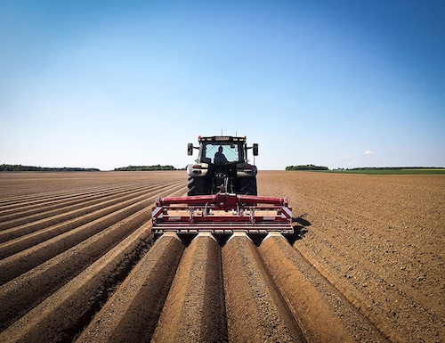
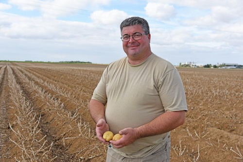
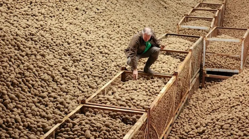
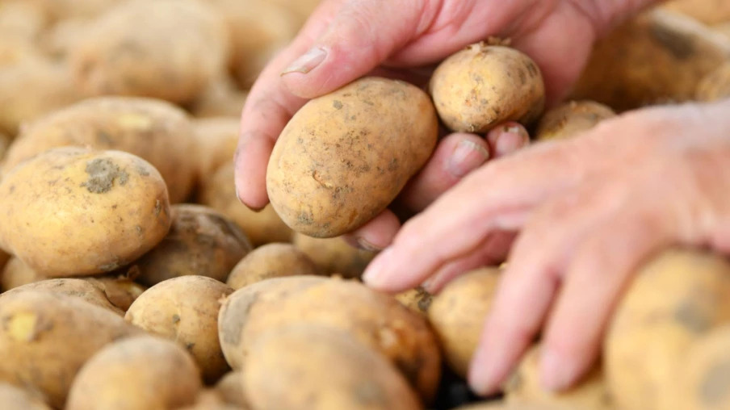

BLTL processes over 4.2 million tonnes of potatoes every year across 14 high-capacity sites. Consistent volumes, consistent quality, consistent prices.
Our products
From a single washing line, BLTL has become one of the leading potato processors in the world. Our vision is simple: a predictable potato, available everywhere, all year round.

Line operators, agronomists, quality technicians, logistics planners: build your career in an industry that never stops, 24 hours a day, 365 days a year.

Climate-controlled storage with sprout-inhibition technology lets us deliver exactly the same potato in March as in October.
Table potatoes calibrated to the millimetre and packed in units from 2 kg to 1,200 kg for retail chains and food service distributors.
Straight, crinkle and steakhouse fries, wedges and hash browns, blanched and frozen at −18 °C within hours of harvest.
Dehydrated flakes, granules and native starch for the snack, bakery, paper and textile industries. Nothing is wasted. Everything is transformed.

Founded in 1987, BLTL now works with more than 3,500 contract growers on 210,000 hectares. Seed, fertilisation, irrigation and harvest dates are planned centrally, so that each field delivers exactly the tonnage our plants require.
The result is a raw material without variability, ready for continuous processing. Today, one in every four fries served in a quick-service restaurant has passed through a BLTL line.